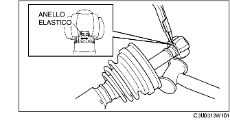

<!DOCTYPE HTML PUBLIC "-//W3C//DTD HTML 3.2 Final//EN" "http://www.w3.org/MarkUp/Wilbur/HTML32.dtd">
<html>
  <head>
    <meta http-equiv="Content-Type" content="text/html; charset=UTF-8">
    <meta name="GENERATOR" content="Quadralay WebWorks Publisher Professional Edition 7.0.2.1206">
    <meta name="TEMPLATEBASE" content="Simple HTML">
    <meta name="LASTUPDATED" content="11/07/03 19:46:07">
    <title>SMONTAGGIO/MONTAGGIO SEMIALBERO (DOPPIO GIUNTO DISASSATO)</title>
  </head>

  <body link="#3366CC" vlink="#9999CC" text="#000000" alink="#0000CC" bgcolor="#FFFFFF">
<a name="wp1025486"> </a><h1><div align="center"><font color="Black" face="Arial, Helvetica, sans-serif" size="5"><b>
SMONTAGGIO/MONTAGGIO SEMIALBERO (DOPPIO GIUNTO DISASSATO)
</b></font></div></h1>
<hr>

<a name="wp1058585"> </a><p><div align="right"><font color="#000000" face="Arial" size="2">
B3E031325501W01
</font></div></p>

<a name="wp1061151"> </a><p><font color="Black" face="Arial, Helvetica, sans-serif" size="2">
	1.	Smontare nell'ordine indicato in tabella.
</font></p>

<a name="wp1058598"> </a><p><font color="Black" face="Arial, Helvetica, sans-serif" size="2">
	2.	Montare nell'ordine inverso allo smontaggio.
</font></p>

<a name="wp1058611"> </a><p><font color="Black" face="Arial, Helvetica, sans-serif" size="2">
</font></p><p></p><p><font color="Black" face="Arial, Helvetica, sans-serif" size="2">


</font></p>

<a name="wp1058628"> </a><p><font color="White" face="Arial, Helvetica, sans-serif" size="2">
.
</font></p>

<a name="wp1060689"> </a><p><font color="Black" face="Arial, Helvetica, sans-serif" size="2">

</font></p>

<a name="wp1058637"> </a><p><font color="Black" face="Arial, Helvetica, sans-serif" size="2">
</font></p><div align="left">
<table border="1">
  <caption></caption>
  <tr align="left">    <td>
<a name="wp1058640"> </a><div><font color="Black" face="Arial, Helvetica, sans-serif" size="2">
1
</font></div>
</td>
    <td>
<a name="wp1058642"> </a><div><font color="Black" face="Arial, Helvetica, sans-serif" size="2">
Fascetta cuffia parapolvere (lato ruota, lato cambio-differenziale: diametro minore)
</font></div>

<a name="wp1058700"> </a><div><font color="Black" face="Arial, Helvetica, sans-serif" size="2">
(Vedere <a  href="B3E031325500W04.html#wp1025486">SMONTAGGIO/MONTAGGIO SEMIALBERO (TIPO CON GIUNTO A TRIPODE )</a>).
</font></div>
</td>
</tr>
  <tr align="left">    <td>
<a name="wp1058666"> </a><div><font color="Black" face="Arial, Helvetica, sans-serif" size="2">
2
</font></div>
</td>
    <td>
<a name="wp1058669"> </a><div><font color="Black" face="Arial, Helvetica, sans-serif" size="2">
Fascetta cuffia parapolvere (diametro maggiore lato cambio-differenziale)
</font></div>

<a name="wp1058730"> </a><div><font color="Black" face="Arial, Helvetica, sans-serif" size="2">
(Vedere <a  href="B3E031325500W04.html#wp1025486">SMONTAGGIO/MONTAGGIO SEMIALBERO (TIPO CON GIUNTO A TRIPODE )</a>).
</font></div>
</td>
</tr>
  <tr align="left">    <td>
<a name="wp1058673"> </a><div><font color="Black" face="Arial, Helvetica, sans-serif" size="2">
3
</font></div>
</td>
    <td>
<a name="wp1058676"> </a><div><font color="Black" face="Arial, Helvetica, sans-serif" size="2">
Anello esterno
</font></div>

<a name="wp1058756"> </a><div><font color="Black" face="Arial, Helvetica, sans-serif" size="2">
(Vedere <a  href="B3E031325501W01.html#wp1059533">Dettaglio montaggio anello esterno e fermaglio</a>.)
</font></div>
</td>
</tr>
  <tr align="left">    <td>
<a name="wp1058770"> </a><div><font color="Black" face="Arial, Helvetica, sans-serif" size="2">
4
</font></div>
</td>
    <td>
<a name="wp1058773"> </a><div><font color="Black" face="Arial, Helvetica, sans-serif" size="2">
Sfere
</font></div>

<a name="wp1058795"> </a><div><font color="Black" face="Arial, Helvetica, sans-serif" size="2">
(Vedere <a  href="B3E031325501W01.html#wp1059441">Dettaglio montaggio gabbia, anello interno, sfere e anello elastico</a>.)
</font></div>
</td>
</tr>
  <tr align="left">    <td>
<a name="wp1058809"> </a><div><font color="Black" face="Arial, Helvetica, sans-serif" size="2">
5
</font></div>
</td>
    <td>
<a name="wp1058812"> </a><div><font color="Black" face="Arial, Helvetica, sans-serif" size="2">
Anello interno
</font></div>

<a name="wp1058836"> </a><div><font color="Black" face="Arial, Helvetica, sans-serif" size="2">
(Vedere <a  href="B3E031325501W01.html#wp1059111">Dettaglio smontaggio anello interno</a>).
</font></div>

<a name="wp1058852"> </a><div><font color="Black" face="Arial, Helvetica, sans-serif" size="2">
(Vedere <a  href="B3E031325501W01.html#wp1059441">Dettaglio montaggio gabbia, anello interno, sfere e anello elastico</a>.)
</font></div>
</td>
</tr>
  <tr align="left">    <td>
<a name="wp1058866"> </a><div><font color="Black" face="Arial, Helvetica, sans-serif" size="2">
6
</font></div>
</td>
    <td>
<a name="wp1058869"> </a><div><font color="Black" face="Arial, Helvetica, sans-serif" size="2">
Anello elastico
</font></div>

<a name="wp1058897"> </a><div><font color="Black" face="Arial, Helvetica, sans-serif" size="2">
(Vedere <a  href="B3E031325501W01.html#wp1059441">Dettaglio montaggio gabbia, anello interno, sfere e anello elastico</a>.)
</font></div>
</td>
</tr>
  <tr align="left">    <td>
<a name="wp1058911"> </a><div><font color="Black" face="Arial, Helvetica, sans-serif" size="2">
7
</font></div>
</td>
    <td>
<a name="wp1058914"> </a><div><font color="Black" face="Arial, Helvetica, sans-serif" size="2">
Gabbia
</font></div>
</td>
</tr>
  <tr align="left">    <td>
<a name="wp1058942"> </a><div><font color="Black" face="Arial, Helvetica, sans-serif" size="2">
8
</font></div>
</td>
    <td>
<a name="wp1058945"> </a><div><font color="Black" face="Arial, Helvetica, sans-serif" size="2">
Cuffia parapolvere
</font></div>

<a name="wp1058975"> </a><div><font color="Black" face="Arial, Helvetica, sans-serif" size="2">
(Vedere <a  href="B3E031325501W01.html#wp1059282">Dettaglio montaggio cuffia parapolvere</a>).
</font></div>
</td>
</tr>
  <tr align="left">    <td>
<a name="wp1058989"> </a><div><font color="Black" face="Arial, Helvetica, sans-serif" size="2">
9
</font></div>
</td>
    <td>
<a name="wp1058992"> </a><div><font color="Black" face="Arial, Helvetica, sans-serif" size="2">
Ammortizzatore dinamico
</font></div>

<a name="wp1059024"> </a><div><font color="Black" face="Arial, Helvetica, sans-serif" size="2">
(Vedere <a  href="B3E031325501W01.html#wp1059195">Dettaglio montaggio ammortizzatore dinamico</a>).
</font></div>
</td>
</tr>
  <tr align="left">    <td>
<a name="wp1059038"> </a><div><font color="Black" face="Arial, Helvetica, sans-serif" size="2">
10
</font></div>
</td>
    <td>
<a name="wp1059041"> </a><div><font color="Black" face="Arial, Helvetica, sans-serif" size="2">
Gruppo albero e giunto sferico
</font></div>
</td>
</tr>
</table>
</div>
<p><font color="Black" face="Arial, Helvetica, sans-serif" size="2">
</font></p>

<a name="wp1059111"> </a><h2><font color="Black" face="Arial, Helvetica, sans-serif" size="4"><b>
Dettaglio smontaggio anello interno
</b></font></h2>

<a name="wp1059121"> </a><p><font color="Black" face="Arial, Helvetica, sans-serif" size="2">
	1.	Muovere l'ammortizzatore dinamico verso il lato ruota del semialbero.
</font></p>

<a name="wp1059134"> </a><p><font color="Black" face="Arial, Helvetica, sans-serif" size="2">
	2.	Muovere la cuffia parapolvere e la gabbia verso il lato ruota del semialbero.
</font></p>

<a name="wp1059145"> </a><p><font color="Black" face="Arial, Helvetica, sans-serif" size="2">
	3.	Utilizzando un mazzuolo di plastica, dare dei colpetti sull'anello interno allargando contemporaneamente l'anello elastico, quindi smontare l'anello interno dal semialbero.</font></p><p><table border="0" cellpadding="0" cellspacing="0"></table></p><p><font color="Black" face="Arial, Helvetica, sans-serif" size="2">


</font></p>

<a name="wp1059195"> </a><h2><font color="Black" face="Arial, Helvetica, sans-serif" size="4"><b>
Dettaglio montaggio ammortizzatore dinamico
</b></font></h2>

<a name="wp1059205"> </a><p><font color="Black" face="Arial, Helvetica, sans-serif" size="2">
	1.	Installare l'ammortizzatore dinamico come mostrato in figura.</font></p><p><table border="0" cellpadding="0" cellspacing="0"></table></p><p><font color="Black" face="Arial, Helvetica, sans-serif" size="2">


</font></p>
<dl>
<a name="wp1059235"> </a><dd><font color="Black" face="Arial, Helvetica, sans-serif" size="2"><b>
Lunghezza standard
</b></font></dd>

<a name="wp1059249"> </a><dd><font color="Black" face="Arial, Helvetica, sans-serif" size="2"><b>
195-205 mm (7,68-8,07 in)
</b></font></dd>
</dl>
<a name="wp1059269"> </a><p><font color="Black" face="Arial, Helvetica, sans-serif" size="2">
	2.	Installare una nuova fascetta per la cuffia parapolvere sull'ammortizzatore dinamico.
</font></p>

<a name="wp1059282"> </a><h2><font color="Black" face="Arial, Helvetica, sans-serif" size="4"><b>
Dettaglio montaggio cuffia parapolvere
</b></font></h2>
<dl>
<a name="wp1059292"> </a><dd><font color="Blue" face="Arial, Helvetica, sans-serif" size="3"><b>
<b>Nota</b>
</b></font></dd>
</dl><dl>
<a name="wp1060690"> </a><dd><font color="Black" face="Arial, Helvetica, sans-serif" size="2">
&bull;&nbsp;Le cuffie parapolvere lato ruota e lato cambio-differenziale sono differenti.
</font></dd>
</dl>
<a name="wp1059313"> </a><p><font color="Black" face="Arial, Helvetica, sans-serif" size="2">
	1.	Riempire la cuffia parapolvere (lato ruota) con il grasso specificato.
</font></p>
<dl>
<a name="wp1059326"> </a><dd><font color="Red" face="Arial, Helvetica, sans-serif" size="3"><b>
Avvertenza
</b></font></dd$hkѶm۶}:!Q&\6&M%Ȁ~sP4QO/3	d
d%Ȥb>Hd(8Jw'QoDL9h
G*4춣UgklXDIJeՉؑVQf-Ɇ6Y^ְuИ!,'{r3,JAN#QEN_^4KsVhcѶm۶}2S%D8yuTyTzXah Ņ5hTX)=(rɒ[ǁ豧=#%\a`ɸjfHhՂQRfG'T[Cy3B
|瀇jC
(H2rFdžbe
TI!5,3J_61\ŗ"(K DJ8/NO8)lԷ4-A$t
jFu4}ĉ'~
S6\HvNSčO2{C@˰GL3ą4sFDf'iV,`?N Bz,}V^cerNA@#Y_?IZب` ;p;-xi]HL҉j:;:=d~ãO*9
eRכӑ{;,,]Cg4!VKŢUaIYwX4FL;Ehuĉ'zNFsu%Ol#};/ސn3v̇]X|4ΰ'҉uoBɎrg'lʺ%jYTdBgˤj`
pPՕlD^;$	>wVn;&GZ-='U*uW`Z$)IRGAȗFp)S
v٢1gGTFȆ"ѿ/:htĉ?EC.h,?M>3`?̠w!f>^	 ,&y\5Q=
*]L|slxL&)*=ݬ)@4"5}?Œ8U)ݩZI~<]sm8Gj'x'V~$@W]?۲k+;IY.}hщ'N3Io',k+ݘ	Ib3@gw!<v$$aM5[l.!	]Oکm@+#.eb#n$DYydN2଄DMhni06c5Rd<3	Mo41s~VQ'-
GF`;Y=8q_4
kz
֦n=,.ф;EOߺ`RNfXhَ[C\ӭj8 9WoZ%F5ߡm=HurBu~~Φf"F
PqZe3gۯ(鬔YA*.W\#Py]__N8qq]8FGY7lOVݍѾ(/ |l`O1@NoFOm0I$R( 11,€xT%Lz-T*Na#W镲6Y؈!4To$l(s61#2mń'[Yb4O R˨\aLwε{=Q~j~US^7:htĉ}ꤛKs>ܯfA?zie'̂@TQL#[DD_}ܴ+)dE
X1<bdĈJD7OB 9a3hO8,mJ322fzG7[=k銀Z%ElvIfAC3X#A,u4褥zN*2@yhF?˕Am+жY5-ʕw=icKO_ץS4щ'N%xȂب^X0yfŠEW<>	r1BQSH.V
|DsɛRZsn%Y8gtH刵J֍w:CHr#=ټSbbTLKXhX~1hd6&ߐ`#6@o>6Zh\U_EOډ8q?H;y6湳,u{]G#QDAl}wX397dL$;l~Uo~Xk:JH:(dђaj!Pa`?3>gL&sOԇz({v2D,Q%fxw&hL:htĉ?E\^Rϕ|{>ൢc75ÃYfFB $vo/Mm6s7㋌l.ъRdf
$DcWgf"4yegc~3U[r*G+Bf(
𯔳3.r}	E<Gc+i!3fJ.h,1IcX.D~4:qĉʫ[
%NӭĀh+7fFGz:[\$V,|4d:"]Z+`4(>lIMw1OFxec
mi33}11\np}qc~]"'>Rc#(S[}?T!*Ռx66)A_N8q⧸2f9lPpT7.o|+۫6U^Xw!ܼHPhT)Jr:Hz/`hcY^K_%ɡT'/j^MCPʅ"]*sgP.$T0ĴT.U-Lb* :
|{] UF62nq&{hAS.Rm	>ՋA}ĉ'~MRh>Fe`$enC35#N#d)kS	K]ahT4dU;z";|8ƀI@rT\z)둒7vJ0q|Rѫua.h:V&q¢jLm.	&M-(g {ԞF=pn$AӠnv]Hƙ6/6|kylj0>\ϡNJ4:htĉk.ШF]ͬ0ͧfbP/d67bDT䔢o~ӒsM”f"U)hF=69'eri-a/E48-C.*fY"4S
YD3H.ǶcLqC<i ?äHi/s
	F&KMii72ֿzA'N)F1mMgޒƑ(v	rH #QYjEoQV(BV+1T SA-cCM)-K`^$BPaЅllL8b`8l"o$kc#muISf:]DE/ߏOmLi¥nرP	K 
+PƬx3 u24yht)]<Ix#3GƢjuMx|TH2EFզ֧=f{DZ
AB0œ(>av4-j;Hy.57F79:X
W:F6XNU-)p<\>á06?Zc0o+=TmmSTvLI%7(~w*kFK5|6p{H5ס)r,t8~Cԇ癑3yz|Z҈TLY`4S7R9$dj<p}s!9\d3wҳt
[&6-~hVVQ~\qڱvw5z["sgG,Q65e{A#y4Fy`vʔgeFlf9ءJg>%6)rA 7"뽝'gV0BGe7Y-u4e&Czbx2DOQ
۶LakklN8¦#!Enkk娗>V]дrtRYq|^>y[=	ޖ)cx FT㆚t.%= d+넍mxVŅT%LCFvTGTUKߛF?N9S+(BY
-;IϜ;4ba)Wu!R53Iy4B4/@ԑou޽cP-?a"gkC̀	IŖԈU|)
OqtV8WgK|&X6CwӼrۮ7t҃b?l7oχ9LCj!Ƽ`tHu}4~yht)]eH.*${hve"/J#L7Ci$L=:ƗU/FLB@jbDY	r>yvqj*Mo*Ljl26wWk$	%ŽM$GoPu3@Pgkjj;O1uHm<8
^Ou
un|&u]M_?N9S+ϫw}uŋ+& {{g:<"{~2'*X폊밡u&ugPT6f9kIӌ64)CZgacu':ᅤd]5#ƶJ}:(Kky-<@&#t9~(k8e`/S=C4
YߎFkhwxhFMF?N9S++R2f{LC
+{FيHƷoo01|dbI,̓,e6Rck'`KCpLZ+3>h4EH伋BwuWrxA~vvr{J=ƨ	.Xڽw>Riqs#9V&rŎ/p~_IG-{	,l]."k>4,]ޓF?N9S+9X5d(s;ўyLTtfP"8f(5?OXP:k	|:DE.9(
ß+R!F"}WM4iЃH#6^$λ?$LF3[ "hC}^4jyJsrP
sR\VPyy<Vawr$F_>r|gypannl
OFq6tk)rwElN2CD]"ZߑF#(.qQPX-pSh	o;}`X"QkmG%
6!n`i`,Ar6_hPiO:ZlZ3Y!RhH[ٜ_dNҨkr\+J.E~gNR@,"҈z?Fr){+x
$>X捅{h-ɟEFPUq0)daf]4>𣫻h*lE%ᤰB.+.3бM#54Vz^h}}^/9~4